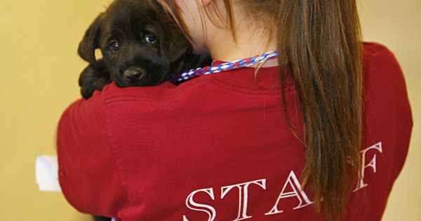

Stafi ynë në
fillim përbëhej nga 4 persona të cilët ishim ideator për fillimin e kësaj
iniciative. Tani jemi rreth 10 persona të cilët punojmë me shumë perkushtim
dhe qdo ditë e më shumë jemi duke u shtuar. Poashtu edhe objekti në të cilin
kemi filluar ka qenë shumë i vogël, por tani falë ndihmes se shumë
donatorëve kemi një objekt të mjaftueshëm për të gjithë. Qdo ditë e më shumë
vullnetarë janë duke na u bashkuar dhe shpresojmë qe edhe më shumë do të
jemi frymëzim për të gjithë në gjithë vendin. Jeta e shumë kafshëve varet
nga ju, kështu që mos ngurroni në qofte se dëshironi të na ndihmoni.